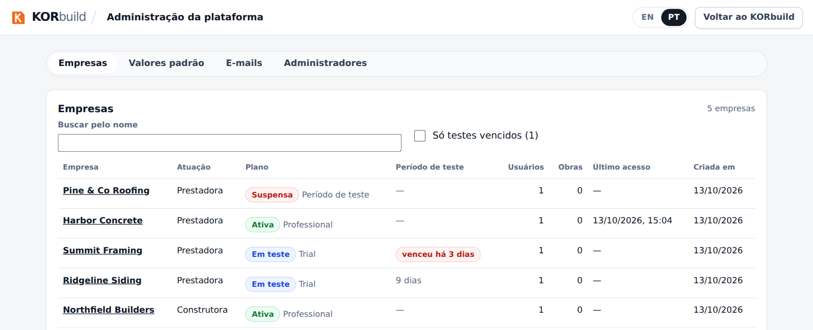
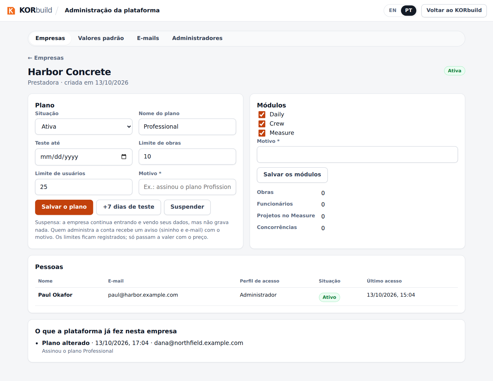
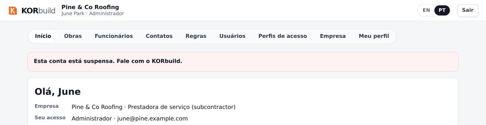
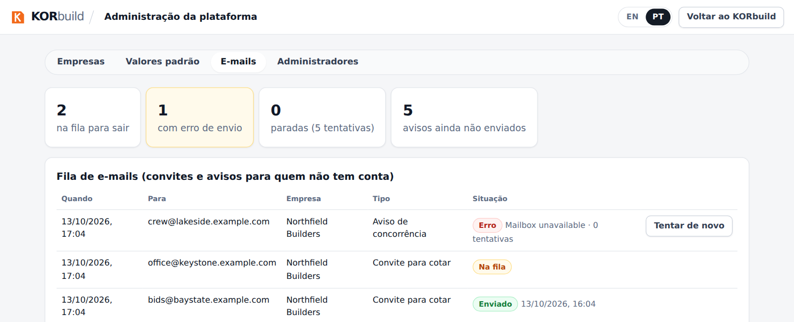

Esta página é para a equipe do KORbuild, não para os clientes. Ela descreve o painel que a equipe usa para cuidar das empresas que têm conta: ver quem está usando o quê, mudar planos, suspender uma conta e acompanhar a fila de e-mails. O painel fica em admin.html e usa o mesmo login do aplicativo; só abre para quem está cadastrado como administrador da plataforma. Quem não é vê "Sem acesso".
Empresas
A primeira tela lista todas as empresas com situação, plano, quantos dias de teste faltam, usuários, obras e último acesso. Busque pelo nome, ou mostre só os testes vencidos.

Uma empresa
Abra uma empresa para ver e mudar o plano e os módulos, ver as pessoas e ler o que a plataforma já fez por ela.

- Situação: Em teste, Ativa, Em atraso, Cancelada ou Suspensa.
- Nome do plano, fim do teste, limite de obras e limite de usuários. Os limites ficam registrados; só passam a valer quando o preço existir.
- +7 dias de teste prorroga o teste com um toque.
- Módulos: Daily, Crew e Measure podem ser ligados ou desligados por empresa (a construtora usa só o Daily).
- Toda mudança exige um motivo. Ele vai para o registro da plataforma e para a auditoria da própria empresa, e quem administra a conta da empresa recebe um aviso (sininho e e-mail) com o motivo.
Suspender uma empresa
A empresa suspensa continua entrando e vendo todos os seus dados, mas não grava nada: o banco de dados recusa qualquer gravação. O app mostra um aviso no alto da conta até a plataforma reativá-la.

E-mails
A fila mostra os convites e avisos para quem não tem conta: o que está esperando, o que foi enviado e o que falhou. Uma mensagem que falhou ou parou depois de 5 tentativas tem Tentar de novo.

Valores padrão e administradores
- Valores padrão: os dias de teste e a configuração inicial que as empresas novas recebem. As que já existem não mudam.
- Administradores: quem pode abrir este painel. A plataforma sempre mantém pelo menos um administrador.
Regras de negócio
| ID | Regra | Situação |
|---|---|---|
| PLT-001 | Só abre o painel quem está cadastrado como administrador da plataforma; toda ação é conferida no banco de dados, não só na tela. | Funcionando |
| PLT-002 | Os dados de uma empresa nunca são abertos à plataforma por permissão de tabela: o painel usa funções do banco que só respondem a administradores. | Funcionando |
| PLT-003 | Mudar um plano ou os módulos exige um motivo e fica gravado no registro da plataforma e na auditoria da empresa. | Funcionando |
| PLT-004 | Uma empresa suspensa entra e lê, mas toda gravação é recusada. | Funcionando |
| PLT-005 | Quem administra a conta da empresa é avisado de uma mudança de plano, com o motivo. | Funcionando |
| PLT-006 | Os limites de obras e de usuários ficam registrados, mas só valem quando o preço existir. | Planejado |
| PLT-007 | O registro da plataforma só cresce: as linhas nunca são editadas nem apagadas. | Funcionando |
| PLT-008 | O último administrador da plataforma não pode ser removido. | Funcionando |